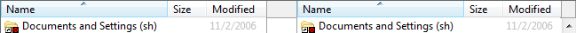

Understanding the Folder Compare Display


|
Understanding the Folder Compare Display |
|
|
The Folder Compare display uses color cues to highlight the differences between the two base folders. By default, the color meanings are:
To change the default colors, select Options Files in the display In the following example, the file on the right side is colored red to show that it is newer. The icon in the center column The content comparison results can override the file colors. For example, the above line would change to all black if the content comparison returned an exact match. You can change this behavior by disabling the Override quick test results option on the Comparison tab of the session settings. The center column shows the results of a content comparison, if any:
Some file types, such as zip archives, can be a container for other files. Beyond Compare can handle these like regular folders. The following example shows our compiled help file with a newer version on the right side. Notice the special "zipper" icon. You can double-click the file to expand it and compare each of the contained files. Folders in the display Folders are colored to give you hints about their contents. For instance, the comparison below lets you know that the folders contain at least one file that is newer on the right (red), and that both sides have at least one orphaned file (blue). Folders may appear hollow when you first start the comparison. This happens when the background scanning process has not yet completed those folders. They will change color when the process is finished. A folder will be yellow if auto-scan is turned off and you haven't opened the folder yet. Once you manually open the folder (and possibly its subfolders) it will be colored appropriately. Folder icons will include a small arrow glyph if the folder is a junction point or symbolic link. Folder icons will include a small red "X" glyph if there was an error trying to open the folder. The following example shows a folder with both conditions. 
|